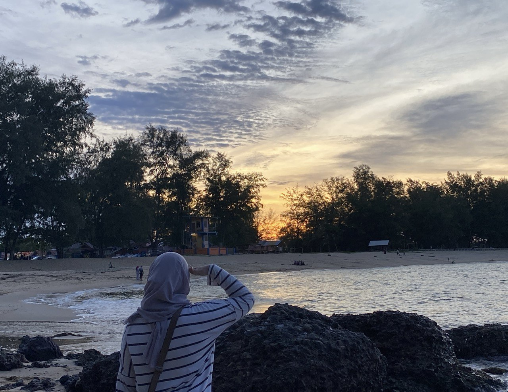
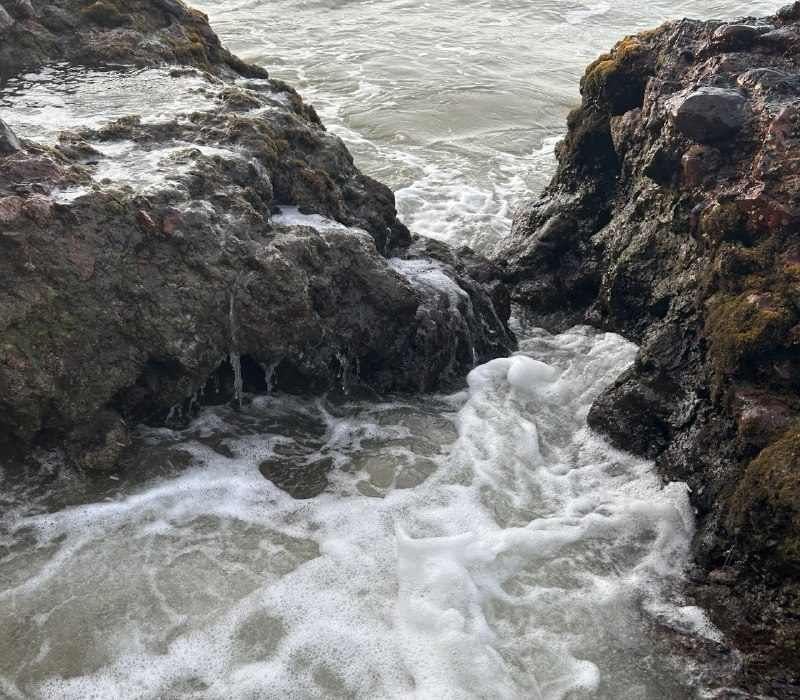

Pulau Perhentian had always been on my bucket list, and finally, I got the chance to visit this paradise with some of my friends. The trip was short but packed with breathtaking scenery, exciting activities, and unforgettable memories. Here’s a recap of our two-day adventure.
Day 1: Arrival and Exploring the Island
We arrived at Kuala Besut Jetty early in the morning, excited for what awaited us.
After a scenic boat ride, we set foot on Pulau Perhentian and were immediately mesmerized by the
crystal-clear turquoise waters and soft sandy beaches.
After checking into our chalet, we wasted no time and headed straight for snorkeling. T
he underwater world was mesmerizing—colorful corals, vibrant fish, and even a glimpse of a sea turtle.
It felt like entering another realm of peace and beauty.
As the sun began to set, we gathered by the beach for a barbecue dinner. The food was fresh and delicious, and the sound of waves in the background added to the ambiance. After dinner, we watched an incredible fireshow by the beach, where skilled performers twirled flaming sticks and created mesmerizing patterns against the night sky. It was a thrilling experience that added an extra touch of magic to our night. We ended the night stargazing and sharing stories, feeling grateful for this moment of serenity.
Day 2: More Adventures and Farewell
We woke up early to catch the sunrise, and it was absolutely worth it.
The sky transformed into shades of orange and pink, casting a magical glow over the sea.
After breakfast, we went kayaking along the coastline,
taking in the beauty of the island from a different perspective.
We stopped by a hidden beach for a quick swim before heading back to pack our things. Before leaving, we made sure to enjoy one last meal by the beach. As we boarded the boat back to the mainland, I couldn’t help but feel a mix of emotions—happy for the memories we made and a little sad that the trip had come to an end.
Pulau Perhentian was everything I had imagined and more. The clear waters, friendly locals, and unforgettable experiences made this trip one for the books. I will definitely be back for another adventure!